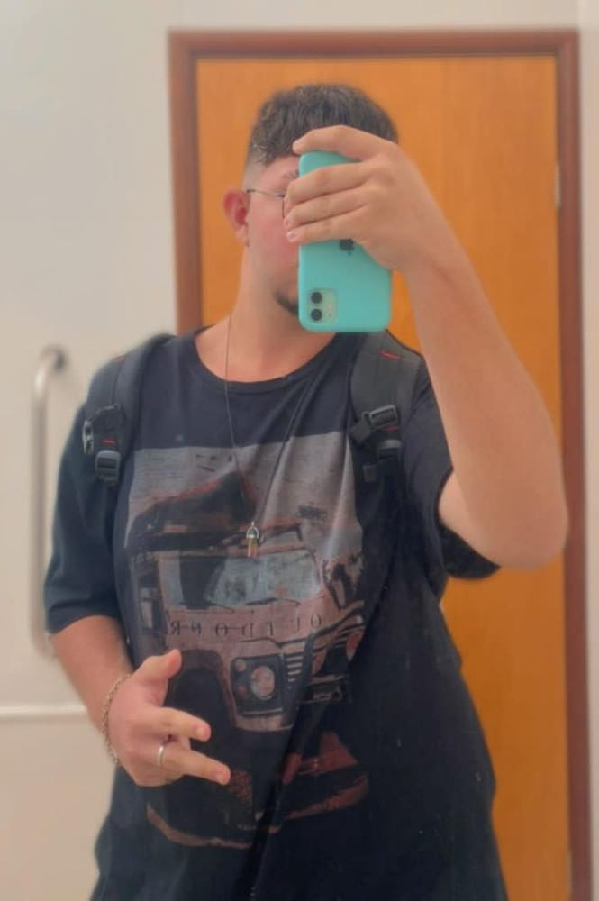

Instagram
Tik Tok
Github

Um pouco sobre mim
- Meu nome é João Victor e tenho 16 anos;
- Moro em Patrocínio - MG;
- No tempo livre fico admirando o céu, lua, entre outras coisas;
- Meu gosto musical é um pouco aletório, gosto de funk, rap, trap, rock, sertanejo e internacionais;
- Gosto de pilotar carro, moto e bicicleta;
- Minhas cores favoritas são preto, azul e rosa;
- Amo biscoitar;
- Gosto também dos games do famoso PS2;
- Meus hobbies são desenhar, escutar música e dormir.